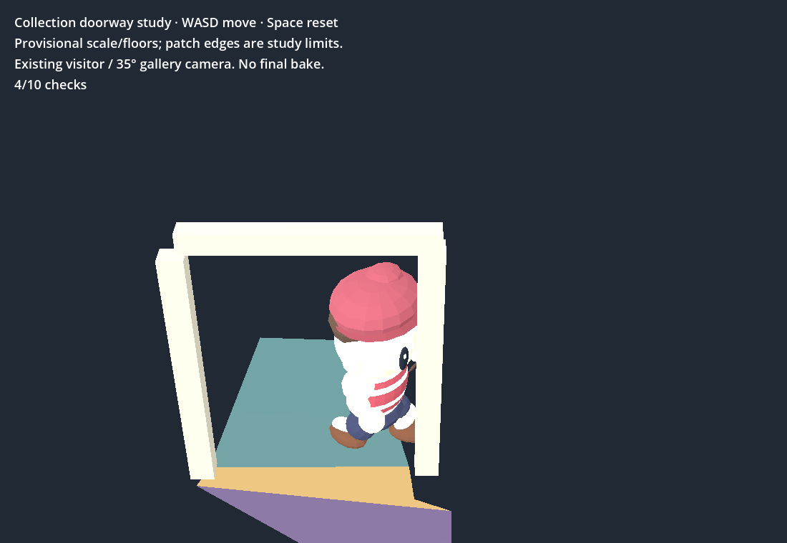
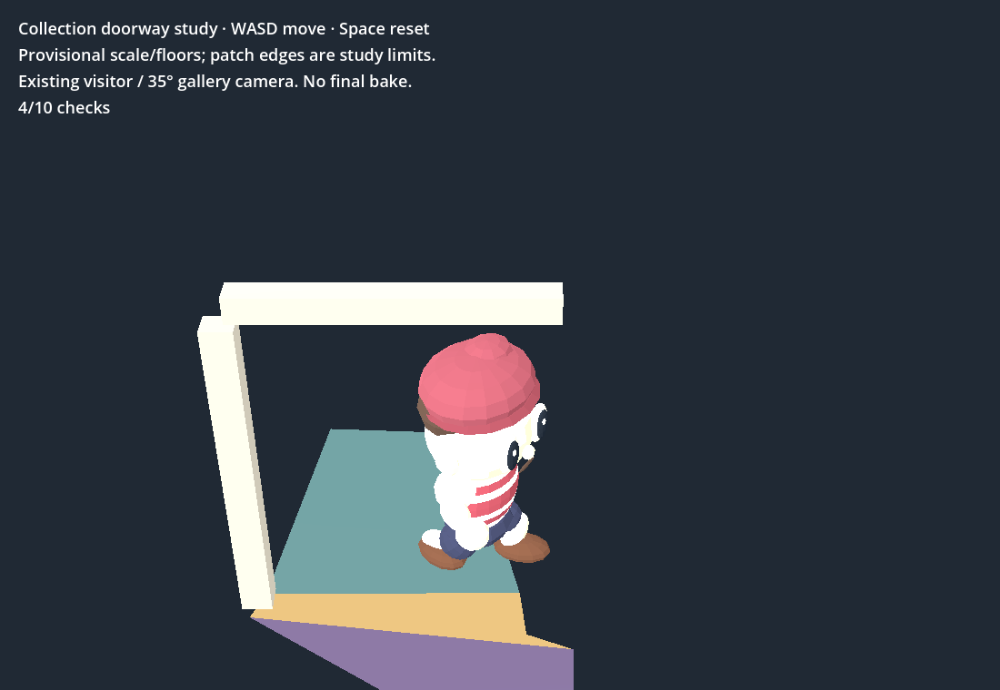
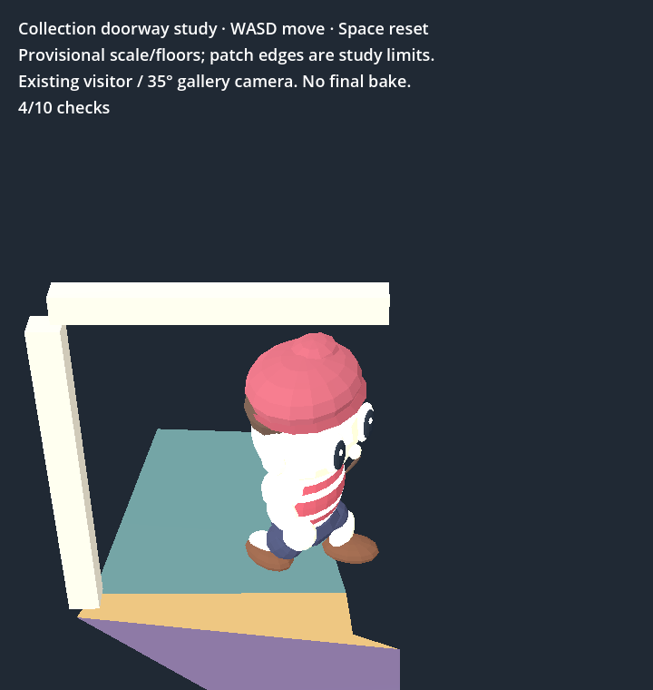
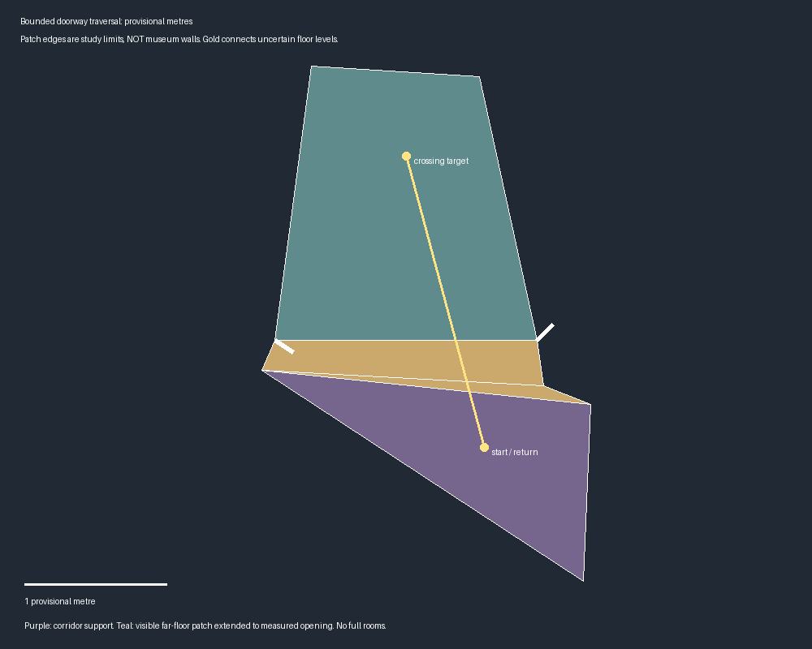

Open the playable study — WASD to walk, Space to reset
A bounded connection study using the existing visitor. Floor levels, scale and casing collision proxies remain provisional. Coloured patch edges are study limits, not museum walls; whole rooms are unfinished.



Ten movement trials and ten camera checks pass natively and in Chrome at 720×760 and 1100×760. Both jambs are contacted from both sides; left/right clear paths cross and return. Real WASD round trips also pass at both browser widths.
One short run per browser size: first ready 2.93s / 4.48s; sampled p95 frame interval 16.67ms / 33.33ms (720px / 1100px). Native p95 11.11ms. These describe this small study, not a final performance budget.

Repository and diff checks pass. The Shell playtest retains the same eight failing checks as the preceding checkpoint; runtime files were not changed. Earlier diagonal pushes could slide into the opening; those trial results are retained separately. A native attempt also lost its X connection; a fresh final run completed.
Frozen reconstruction and ten original video hashes verified. Existing holdout remains 49/69 supported and 46/69 point-split passes; nearby same-video checks do not establish independent capture or metric accuracy. No paid calls; existing Muse total remains $0.02. Sculpture holes/rear coverage and baking remain unresolved.
Next: measure room floor/wall extents against wider-baseline references before enlarging the walkable patches. Tickets remain open; the heartbeat stays enabled.
720px results · 1100px results · Native results · Hashes and provenance